Misiones
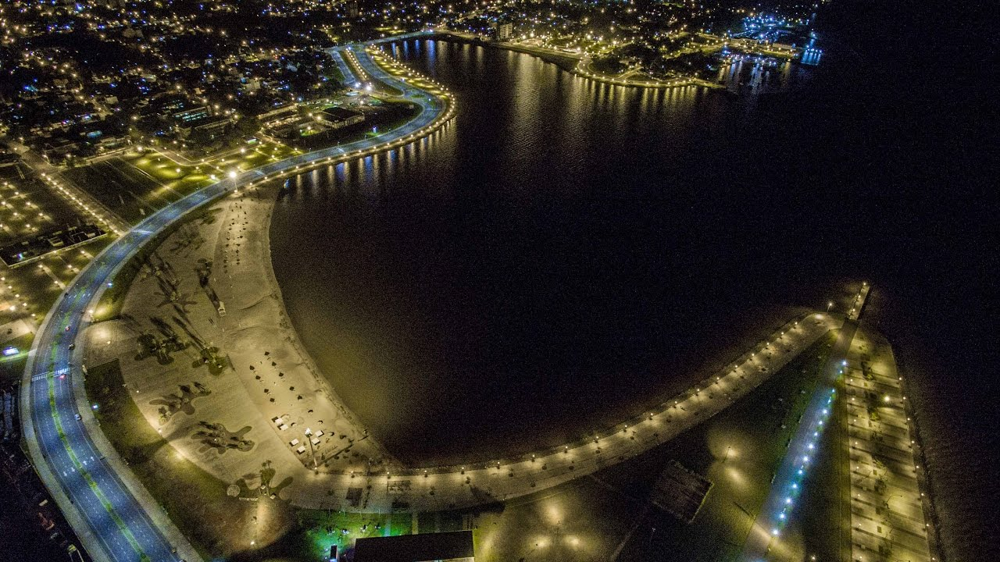Misiones, en el texto de la Constitución provincial: Provincia de Misiones, es una de las veintitrés provincias de la República Argentina. A su vez, es uno de los veinticuatro estados autogobernados o jurisdicciones de primer orden que conforman el país, y uno de los veinticuatro distritos electorales legislativos nacionales.78 Su capital y ciudad más poblada es Posadas. Está ubicada en el noreste del país, en la región del Norte Grande Argentino, limitando al norte y este con los ríos Iguazú, San Antonio, Pepirí Guazú y Uruguay que la separan de Brasil, al sur con Corrientes, por medio de los arroyos Itaembé y Chimiray, y al oeste con el río Paraná que la separa de Paraguay.
Greografia
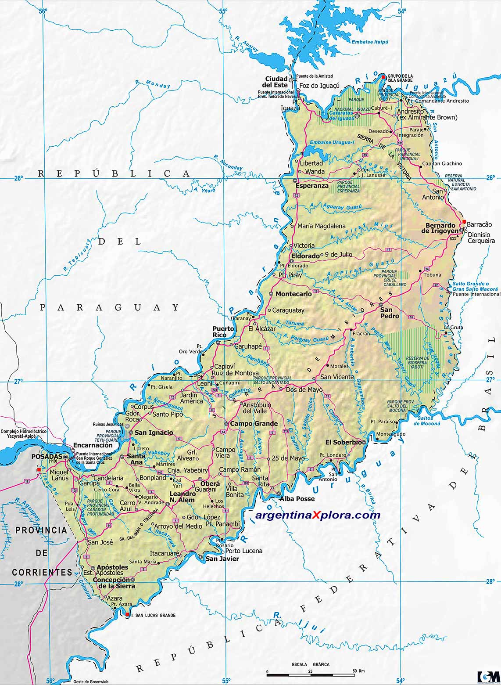Su territorio ocupa una superficie de 29 801 km², la que se compara con la de Bélgica. Es la tercera provincia más pequeña después de Tucumán y Tierra del Fuego: representa solo un 0.8 % del total del país. Geológicamente integra el macizo de Brasilia a través de la meseta misionera. En Misiones existen diferentes tipos de suelos, siendo los más característicos los derivados del basalto, ya que cubren las dos terceras partes del territorio. Estos suelos son conocidos como "lateríticos" o "latosoles", y su coloración es rojiza o marrón-rojiza debido a la descomposición de los basaltos y metalíferos arcillosos; además poseen un alto contenido de óxido de hierro y aluminio. En algunos lugares el suelo es poco profundo y con rocas aflorantes, en otros pedregosos y con pendientes muy inclinadas. Las formaciones que se encuentran en Misiones son llamadas mesetas aunque se trata de mesetas de erosión hídrica y eólica, con forma mamelonada. En esta provincia no han ocurrido plegamientos, sino fracturas del sustrato precámbrico, en el que se encuentra el macizo de Brasilia. Por el centro de la meseta se eleva la sierra de Misiones o Central, que es divisoria de aguas entre los ríos Paraná y Uruguay llegando a su mayor altura, 843 msnm, cerca de Bernardo de Irigoyen, en el cerro Rincón. Al sur se halla la sierra del Imán o Itacuara y al norte la sierra de la Victoria, que hacer de divisoria de aguas entre los ríos Paraná e Iguazú. Este último, al cortar las sierras forma las cataratas del Iguazú.
Recursos Hidricos
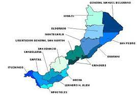La provincia se encuentra rodeada por cinco ríos, de los cuales tres son de gran importancia: el Paraná, el Uruguay y el Iguazú, natural desagüe de grandes regiones con lluvias abundantes. Los otros dos son el San Antonio y el Pepirí Guazú. En ellos desembocan no menos de ochocientos cursos permanentes de agua, de los cuales doscientos setenta fluyen hacia el Paraná y el arroyo Itaembé, ciento veinte hacia los ríos Iguazú y San Antonio, y los restantes hacia los ríos Uruguay y Pepirí Guazú
Principales cursos fluviales
Se ha planteado la posibilidad de construir una central hidroeléctrica sobre el río Paraná, en las cercanías Corpus o de Garupá; esta posibilidad ha sido bloqueada por la realización de un plebiscito provincial, por el cual el 88 % de los votantes se manifestaron en contra del proyecto.
Las cataratas del Iguazú
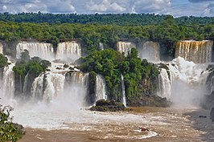Vista parcial de un pequeño sector de las Cataratas del Iguazú. Artículo principal: Cataratas del Iguazú Las cataratas del Iguazú, localizadas en la frontera entre el estado de Paraná (Brasil) y la provincia de Misiones (Argentina), integran el territorio del parque nacional Iguazú. Están formadas por 275 saltos de hasta 82 metros de altura, alimentados por el caudal del río Iguazú. El día 11 de noviembre de 2011, fueron declaradas una de las siete maravillas naturales del mundo a través de una votación en una página web propietaria de la marca New7Wonder, involucrando la participación de más de 100 millones de personas de todo el mundo.9 Las islas más conocidas son San Martín e isla Grande: se encuentran río arriba, dividiéndolo en dos brazos que se reúnen poco después, cayendo a través de rudas formaciones de basalto y de lava hasta chocar en la Garganta del Diablo, donde el río prosigue hasta desembocar en el río Paraná, que junto con el río Paraguay y el Uruguay, contribuyen a la formación de la cuenca del Plata.
Clima
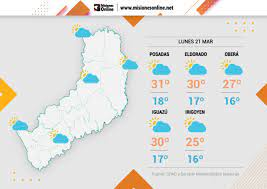El clima de Misiones es subtropical húmedo sin estación seca, por lo cual es la provincia más húmeda del país. Las localidades de baja altitud del sector sur y de los valles del Paraná y el Uruguay poseen clima semitropical húmedo, en tanto a mayor altitud se presenta el clima tropical marítimo, un tipo climático similar al clima subtropical húmedo. Los vientos predominantes son del noreste, sudeste y este. El bioma que presenta es selva misionera y bosque en galería. Parte de la selva ha sido transformada por el hombre para cultivos o ganadería. El bioma original se encuentra protegido en el parque nacional Iguazú y otros parques y reservas provinciales. La temperatura media anual es de 24 °C.
Selva
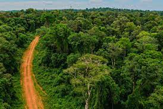
Selva misionera en el Parque Nacional Iguazú.
La selva misionera o selva argentina, ubicada en la actual Provincia de Misiones y una pequeña porción en el
extremo nordeste de la Provincia de Corrientes (en el nordeste de la Argentina), Argentina, es parte de la
formación vegetal neotropical del bosque atlántico, compartido con Brasil y Paraguay. Es la prolongación más
meridional de la selva paranaense, que hasta mediados del siglo xx abarcaba gran parte de lo que hoy son los
estados brasileños de Paraná, Santa Catarina, el extremo norte de Río Grande do Sul y el este del Paraguay. La
selva misionera se encuentra en el corredor verde de Misiones.
Es una de las regiones más biodiversas de la Argentina, con alrededor de 3.000 especies de plantas vasculares
y 500 especies de aves. Es el hábitat del yaguareté16 y el lugar donde se concentra la mayor cantidad de
ejemplares de esta especie en la Argentina.
La selva misionera es una selva tropical con veranos muy calurosos e inviernos relativamente frescos. Es una
formación vegetal beneficiada por suelos muy ricos en materia orgánica, mucho sol y clima cálido y perhúmedo
(más de 3000 mm de precipitaciones al año). Posee una foresta densa y exuberante. En las latitudes tropicales,
la selva misionera mantiene gran parte de las características de una pluvisilva tropical con zonas semejantes a
la laurisilva y abundantes latifoliadas.
Se la considera un sumidero de carbono, concentrando 920.995 Gigagramos (Gg) de CO2.18
La selva misionera ocupa actualmente un 35% del territorio de la provincia de Misiones. Hasta mediados del siglo
xix la selva cubría la totalidad de la actual provincia de Misiones. Hacia 1950 la superficie forestal autóctona
en Misiones cubría 2.700.000 ha. En la década de los 90 la selva se había reducido en un 44%.
Las causas de la deforestación son la instalación de actividades agrícolas, como las plantaciones de té, tabaco
y yerba mate, y las actividades de la industria maderera. La deforestación tuvo varios momentos diferentes,
desde las misiones jesuíticas que buscaron instalar prácticas agrícolas y fomentaron el cultivo de la yerba
mate, hasta los ideales de civilización y progreso de finales del siglo xix que veían a la selva como un lugar
inhóspito que debía ser conquistado rápidamente para su explotación económica.
Para proteger la superficie forestal existente, se sancionó la ley provincial XVI - N° 105, Ley de Ordenamiento
de los Bosques Nativos, y sus decretos reglamentarios.20 Estos establecían a 201721 un total de 1.200.000
hectáreas de bosque nativo que no pueden ser deforestadas, encuadrándolas en las categorías I y II de la Ley de
Bosque Nativo.22 El sistema de gestión de recursos protegidos de la selva misionera cuenta con más de 100
unidades diferentes de conservación, entre parques, reservas, monumentos naturales, áreas y refugios de vida
silvestre
Flora
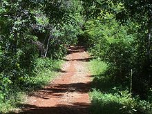Originalmente, la selva misionera abarcaba 2 900 000 hectáreas, lo que representaba la totalidad del territorio misionero. Con las construcciones de las rutas nacionales 12, la 14 y otras rutas provinciales se facilitó el acceso humano a casi todos los rincones de la provincia. La extracción de materia prima y el aumento poblacional junto con la expansión de las tierras usadas para el cultivo provocaron una grave disminución de la selva nativa. Actualmente, quedan unas 945 000 hectáreas, lo que representa un 35 % del territorio de Misiones. Con el fin de evitar una reducción mayor en esta área selvática, algunas organizaciones actualmente apoyan la creación de leyes forestales más rigurosas.
Entre las especies mas importantes se hallan:
- El anchico
- la cancharana
- El cedro maco
- El cedro misionero
- El guatambu
- El incienso
- El lapacho
- El laurel blanco
- El laurel negro
- La maria preta
La selva tropical ocupa un 35 % del territorio de la provincia, y las causas más graves de su desaparición son la deforestación indiscriminada y la quema para llevar a cabo prácticas agrícolas. Se destaca por altos registros pluviométricos (lluvias) que son resultado de los vientos húmedos provenientes del océano Atlántico. La humedad media relativa varía del 75 al 100 % con importantes rocíos nocturnos. Las temperaturas oscilan entre los 19 °C (promedio para la estación invernal especialmente en junio y julio) y 29 °C (promedio para los meses veraniegos de enero, febrero y marzo), alcanzando temperaturas de 44 °C durante el día, en verano.
Fanua
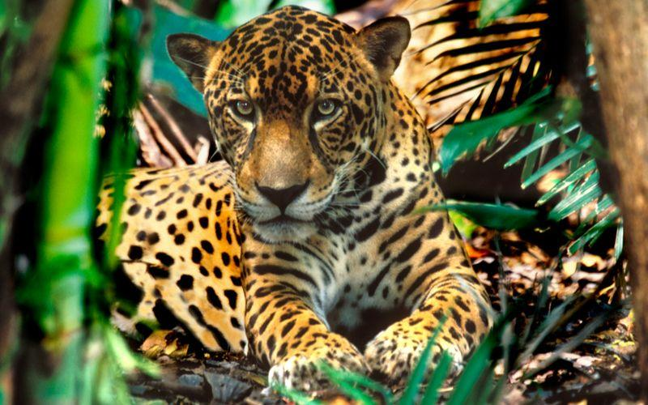
La fauna de la provincia es muy rica en variedad, aunque la continua desaparición de la Selva misionera ha
puesto en peligro de extinción a gran cantidad de especies.
las más llamativas son:
- Aguara guazú 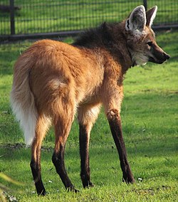
- Aguila calzaa barreada

- Aguila morena

- Aguila viuda

- Comadreja de agua

- Guacamayo rojo 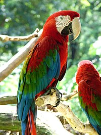
- Harpia 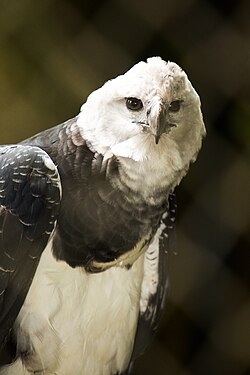
- Hocó oscuro 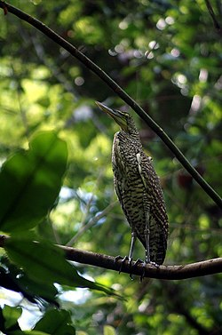
- Loro vinoso

- Loro chorao

- Macuco 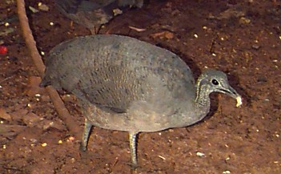
- Maracaná cara afeitada 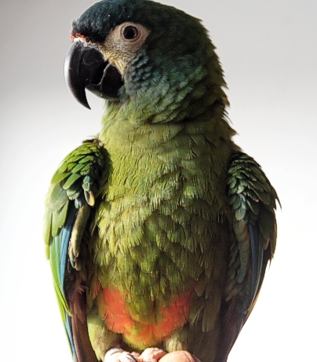
- Mono caraya rojo 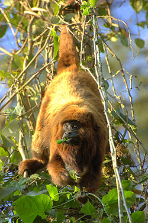
- Nutria gigante 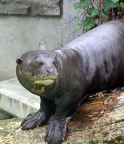
- Ocelote 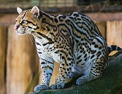
- Oso hormiguero

- Pato serrucho 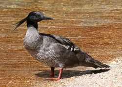